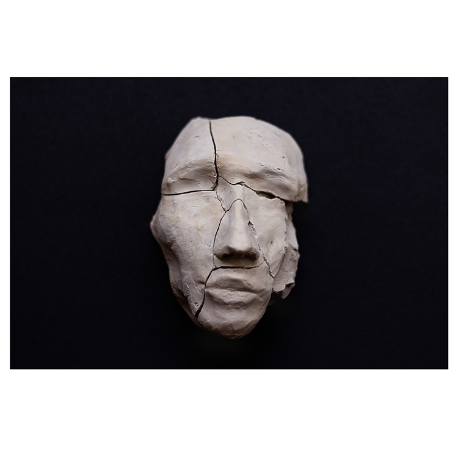
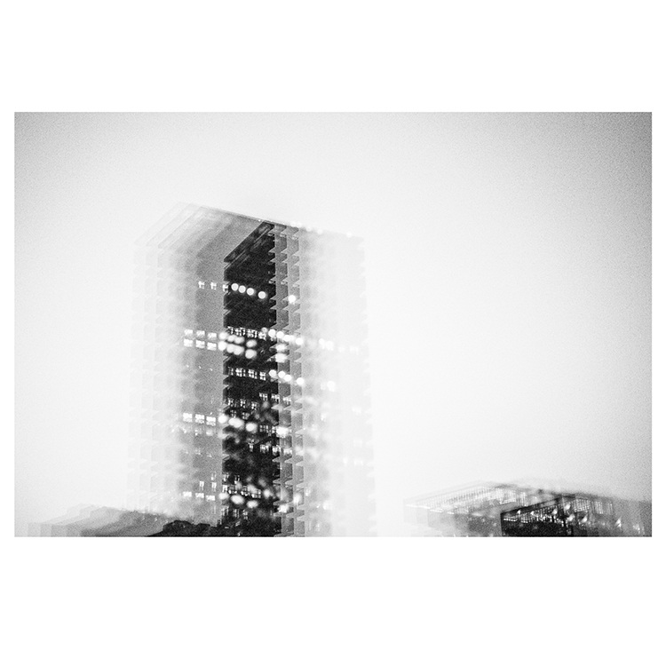

A PAREDE CINZA The register of my friends listening to me telling them a lie.  PEDAÇOS A reflection about the things' afterlife. Is there beauty in a sculpture after it got broken?  THE BLURRY CITY How do you perceive the space around you after months isolated?